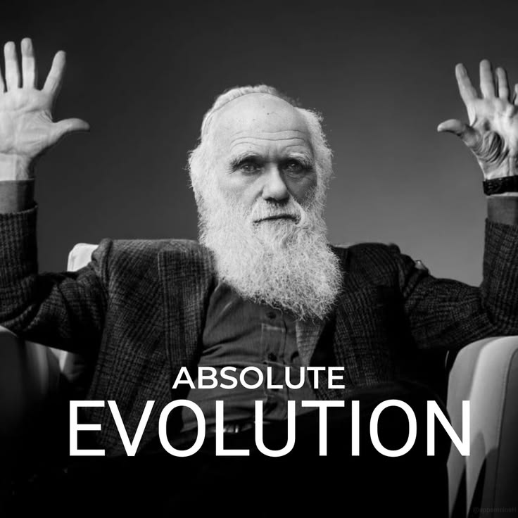

Linea del tiempo
- Nace en Sherewsbury.
- Publica Viaje de un naturalista alrededor del mundo en el H.M.S Beagle.
- Presentación conjunta, ante la Linnear Society, de la teoría de la selección de Darwin y de A. R. Wallace.
- Publica The Origin of Species (El origen de las especies).
- Muere.
En sus palabras
"Hay grandeza en esta concepción de la vida: que, a partir de un comienzo tan sencillo, han evolucionado, y siguen evolucionando, infinitas formas, las más bellas y maravillosas."
Con esta frase termina El origen de las especies. Darwin demostró que todas las especies, incluidos los seres humanos, descienden de ancestros comunes y cambian a lo largo del tiempo por selección natural
Si quieres saber más lee su Biografia en Wikipedia